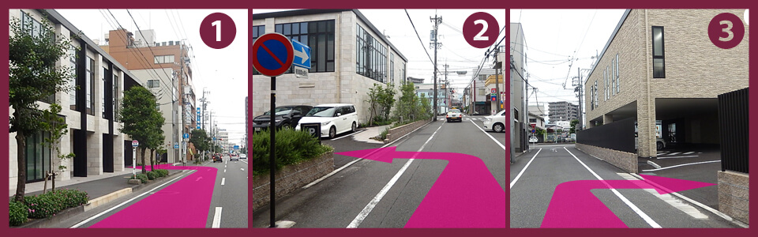

ホーム > お問い合わせ
お問い合わせ

当院の治療方法や方針、その他ご質問などございましたら、お気軽にお問い合わせください。また、よくある質問をまとめています。お問い合わせの前に是非ご一読ください。
お問合わせは、下記 お問い合わせフォーム まはた、お電話にてお願いいたします。
お返事をお返しするまでに、数日程度お時間がかかる場合があります。ご了承ください。
また、お急ぎの際のお問合せは、下記電話番号までお願いいたします。
お返事は、「@i.softbank.jp」のドメインのアドレスより届きます。
「@i.softbank.jp」よりのe-mailが届く設定にした状態でお問い合わせください。
ご理解とご協力のほどお願い申し上げます。
＊診療予約につきましては、原則、 インターネット予約 をご利用頂いております。
お電話によるお問い合わせ
電話番号：054-288-2882
＊お問合せ内容により、電話再診料が発生することがあります。
お問い合わせフォーム
 ページの先頭へ
ページの先頭へクリニックへのアクセス

〒422-8066 静岡県静岡市駿河区泉町2-20
◎静岡駅南口交差点より西へ徒歩4分
◎最寄の静鉄バス停留所
●静岡駅南口停留所
●伊河麻神社前 みなみ線：中田（三菱）経由・中田（競輪場入口）経由
●泉町 石田街道線：下島経由（土・日祝日のみ）
◎車でお越しの方 当院の駐車場をご利用下さい。
駐車場について

当院の裏手に駐車場40台を完備しております。受診の際にお使いください。
駐車場に空きが見当たらない場合は、当院コンシェルジュデスクまでお電話ください。TeL:054-288-2882
* 駐車スペースには限りがあります。受診を終えた方は速やかにお車の移動をお願いいたします。
駐車場案内図
